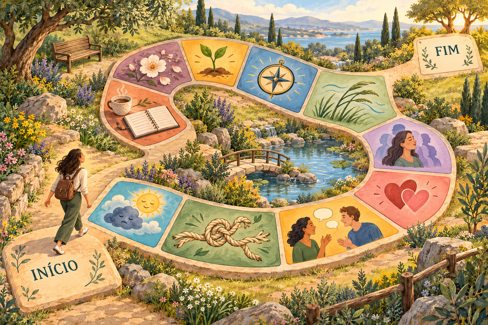

CADA CONVERSA TEM SEU CAMINHO
Sobre o que vamos conversar hoje?
Escolha um tema na trilha. Depois, puxe uma carta e descubra o convite que ela traz.
1 Escolha um tema→2 Puxe uma carta→3 Abra a conversa

Você pode começar por qualquer tema. Não precisa seguir a ordem da trilha.
10 temas · 60 convitesTODOS OS CAMINHOS, DO SEU JEITO
Prefere escolher pelo nome?
Nenhum caminho por aqui ainda. Experimente outra busca.